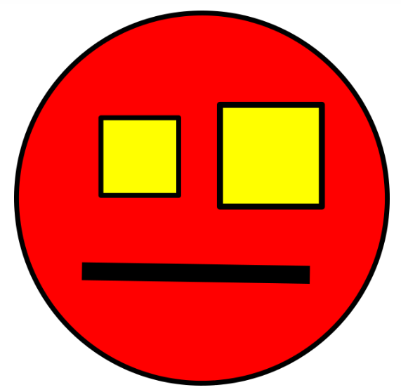

<html></html>
	<head>
		<title>InceptionU (clone)</title>
        <style>
            body {
                font-family: Arial, Helvetica, sans-serif;
            }
        </style>
	</head>
	<body>
        <p>LESSON</p>
        <h1>Syntax and Communication</h1>
        <h2>Where are we?</h2>
        <p>We have been working with systems and starting to understand the layers of a full stack application.  This is sort of an "outside-in" or "top-down" approach to understanding how applications are built.
        <p>Today we flip the picture upside down and look at the individual files that make up the parts of a full stack system, starting with the concept of syntax.  We will introduce our first syntax, namely HTML.</p>
        <h2>When we write something down...</h2>
        <p>...we capture a bit of speech as symbols on a page.  The set of rules we use when we do that is called the language "syntax".</p>
        <p>Let's get an example from the class.   The situation is your parents are coming to visit soon and the children are making a mess in the living room that you want cleaned up.  What would you say to command them to clean it up!</p>
        <p>(put up two or three examples from the class)</p>
        <h3>Syntax versus semantics</h3>
        <p>Compare the examples.  Notice the words they used are different, but despite this the meaning is the same.  What rules can we find that are consistent between the examples when examining the symbol sequences letter by letter?</p>
        <p>The consistent rules are the "syntax."  If we mess with the syntax, it can make the message invalid, or even dramatically change the meaning of the sentence.  Syntax is meant to be regular.  Lets try changing some things to see what happens.</p>
        <p>The choices we make (like which word to use) combine with the syntax form the meaning of the sentence.  This is the "semantics" of the sentence.  Notice all the examples use the same basic syntax but different word choice and order. It is the word choice that leads to similar semantics between the messages.</p>
        <h3>Follow on</h3>
        <p>Get an example in Spanish, Arabic, and Chinese for the same.  Uncover new syntax rules by discovering that didn't surface in our earlier examples.</p>
        <h3>What about writing apps?</h3>
        <p>Consider that computers "parse" files one character at a time.  Each character is a letter (in the latin alphabet), space, punctuation, or line-end.  Every file we write is meant to be read and possibly executed by a machine, and the syntax of these files is very specific.  We will primarily be using the following syntax in this course:</p>
        <ol>
            <li><b>HTML</b> - Hyper Text Markup Language that describes document structure </li>
            <li><b><em>CSS</em></b> - Cascading Style Sheets which is a syntax for describing visual attributes of portions of a document.  CSS is technically a part of HTML, but so very different that we consider them separately.</li>
            <li><em><strong>JavaScript</strong></em> - a formal programming syntax that can describes instructions and groups of instructions (called functions) which can process and manipulate data.</li>
            <li><strong>JSON</strong> - JavaScript Object Notation that describes data </li>
        </ol>
        <h3>Exercise</h3>
        <p>Work in pairs to make a "syntax description" for a file format that can represent simple drawings that consist of squares, circles, and lines.  You can only use any letters or symbols on your computer keyboard.</p>
        <h3>Part 1</h3>
        <p>Write the "program" in your syntax to draw the following figure:</p>
        
        <p>This image is not AI generated!</p>
        <h3>Part Two</h3>
        <p>Secretly draw your own picture with circles, squares and lines and write the program for it.  Give your program to your partner and let them "run" it to recreate your picture.  Compare your original drawing to what your partner created.</p>
        <h3>Unpacking</h3>
        <p>What were common syntax elements across two or three working examples?
        <p>How could you extend your syntax to add triangles?</p>
        <p>You can make many different drawings without changing the syntax.  This is a great example of the difference between semantics and syntax.</p>
        <p>What are the limits of your drawing syntax?  What is something you cannot draw?</p>
        <h3>Our first syntax - HTML</h3>
        <p>Base syntax elements are:</p>
        <ol>
            <li><strong>Tag</strong> - can contain optional attributes and optional content</li>
            <li><strong>Attribute</strong> - belong to tags and set values on that tag</li>
            <li><strong>Content</strong> - composed of a list of tags or text</li>
        </ol>
        <p>Basic tag syntax for a tag with no content:</p>
        <p><em><</em>
           <em>tagName</em>
           <em>/</em>
           <em>></em>
        </p>
        <p>Tag names can be any valid string of letters.  HTML specifies tags with semantic content.</p>
        <p>Predictably, the allowed tagnames in html are describe document parts.  </p>
    </body>
</html>